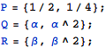

東京大学 2011年 理科 第4問
問題
座標平面上の1点をとる。放物線上の2点を、3点P, Q, RがQRを底辺とする二等辺三角形をなすように動かすとき、ΔPQRの重心G(X,Y)の軌跡を求めよ。
解答
点Qと点Rは点Pについてそれぞれ必ず反対側にあるから、としても一般性を失わない。PQ== PRであるから、重心G(X, Y)の関係式は以下。

求める軌跡は下図の実線部。なお端点は含まない。